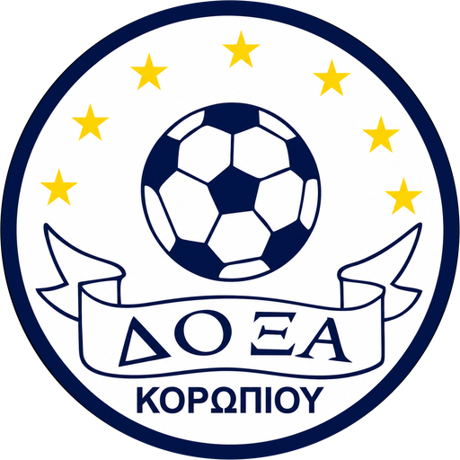

Από το 1981
Ο σύλλογος
Η Αθλητική Ένωση Δόξα Κορωπίου ιδρύθηκε το 1981 και αγωνίζεται στη Γ΄ Κατηγορία της ΕΠΣΑΝΑ.
Το έμβλημα
Μια μπάλα κάτω από ένα τόξο με επτά χρυσά αστέρια, το όνομα του συλλόγου σε κορδέλα και από κάτω το Κορωπί. Το έμβλημα λέει τι είναι ο σύλλογος: ποδόσφαιρο, φιλοδοξία και η πόλη από την οποία προέρχεται.
Τα χρώματά μας
ΚίτρινοΒασικό χρώμα
ΜαύροΔεύτερο χρώμα

Με μια ματιά
1981Ίδρυση
ΚορωπίΠόλη
Γ΄ Κατ.ΕΠΣΑΝΑ
2 γήπεδαΠρίφτης · Παπασιδέρης
Διοικητικό συμβούλιο
- ΠρόεδροςΘα ανακοινωθεί
- ΑντιπρόεδροςΘα ανακοινωθεί
- Γενικός γραμματέαςΘα ανακοινωθεί
- ΤαμίαςΘα ανακοινωθεί